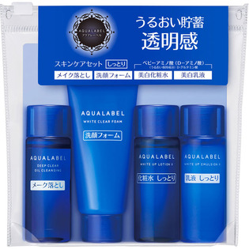
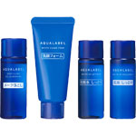

返回列表
产品名称：アクアレーベル ホワイトアップセットN

資生堂 アクアレーベル ホワイトアップセットN －（医薬部外品）
メーカー 資生堂
JANコード 4901872050901
商品の特徴
満ちるうるおい透明感
しっとり
- 成分・分量
- 【ディープクリアオイルクレンジング】
ミネラルオイル,エチルヘキサン酸セチル,ジイソステアリン酸ＰＥＧ－１２,ジフェニルシロキシフェニルトリメチコン,イソステアリン酸ＰＥＧ－１０,水,イソステアリルアルコール,乳酸,塩化Ｍｇ,ＰＣＡ,塩化Ｃａ,水添レシチン,ジイソステアリン酸ＰＥＧ－８,エタノール,ＢＨＴ,ＰＥＧ／ＰＰＧ－３５／４０ジメチルエーテル,テトラヒドロキシプロピルエチレンジアミン,グリセリン,ＢＧ,トコフェロール,水酸化Ｎａ,ＰＥＧ－３０ダイズステロール,水酸化Ｋ,ＥＤＴＡ－３Ｎａ,クエン酸,フェノキシエタノール,香料
【ホワイトクリアフォーム】
水,ミリスチン酸,グリセリン,ステアリン酸,水酸化Ｋ,ソルビトール,ＤＰＧ,ラウリン酸,イソステアリン酸ＰＥＧ－６０グリセリル,ＰＥＧ－６,ＰＥＧ－３２,ポリエチレン,ジステアリン酸グリコール,ステアリン酸グリセリル（ＳＥ）,ヒアルロン酸Ｎａ,乳酸,塩化Ｍｇ,ＰＣＡ,塩化Ｃａ,水添レシチン,ＥＤＴＡ－２Ｎａ,タルク,ＰＥＧ／ＰＰＧ－３５／４０ジメチルエーテル,エチルセルロース,ＢＧ,トコフェロール,水酸化Ｎａ,ＰＥＧ－３０ダイズステロール,ＥＤＴＡ－３Ｎａ,クエン酸,フェノキシエタノール,香料,酸化亜鉛
【ホワイトアップ ローション （II）】
トラネキサム酸,Ｄ－グルタミン酸,エーデルワイスエキス,アセチル化ヒアルロン酸ナトリウム,ヒアルロン酸ナトリウム（２）,精製水,ジプロピレングリコール,濃グリセリン,エタノール,ポリエチレングリコール４００,ポリエチレングリコール１５００,ポリオキシエチレン（１７）ポリオキシプロピレン（４）ジメチルエーテル,ポリオキシエチレンポリオキシプロピレンデシルテトラデシルエーテル,カルボキシビニルポリマー,エデト酸二ナトリウム,キサンタンガム,ピロ亜硫酸ナトリウム,フェノキシエタノール,パラオキシ安息香酸エステル,香料
【ホワイトアップ エマルジョン （II）】
トラネキサム酸,Ｄ－グルタミン酸,エーデルワイスエキス,アセチル化ヒアルロン酸ナトリウム,ヒアルロン酸ナトリウム（２）,精製水,濃グリセリン,ジプロピレングリコール,α－オレフィンオリゴマー,２－エチルヘキサン酸セチル,エタノール,メチルポリシロキサン,モノステアリン酸ポリオキシエチレングリセリル,イソステアリン酸ポリオキシエチレングリセリル,ワセリン,ベヘニルアルコール,無水ケイ酸,ステアリン酸,イソステアリン酸,ベヘニン酸,カルボキシビニルポリマー,水酸化カリウム,エデト酸二ナトリウム,ピロ亜硫酸ナトリウム,フェノキシエタノール,香料
- 用法及び用量
- 【ディープクリアオイルクレンジング】
●手や顔をぬらさずにお使いください。
●手のひらに５００円硬貨大を目安にとり、顔全体にメークとよくなじませた後、十分に洗い流します。
【ホワイトクリアフォーム】
●手のひらに約１ｃｍをとり、少量の水かぬるま湯を加えながら、顆粒を溶かすようによく泡立ててから洗います。その後、十分に洗い流します。
【ホワイトアップ ローション（II）】
●洗顔の後、手のひら、またはコットンに５００円硬貨大をとり、顔全体になじませます。
【ホワイトアップ エマルジョン（II）】
●化粧水の後、手のひら、またはコットンに１０円硬貨大をとり、顔全体になじませます。